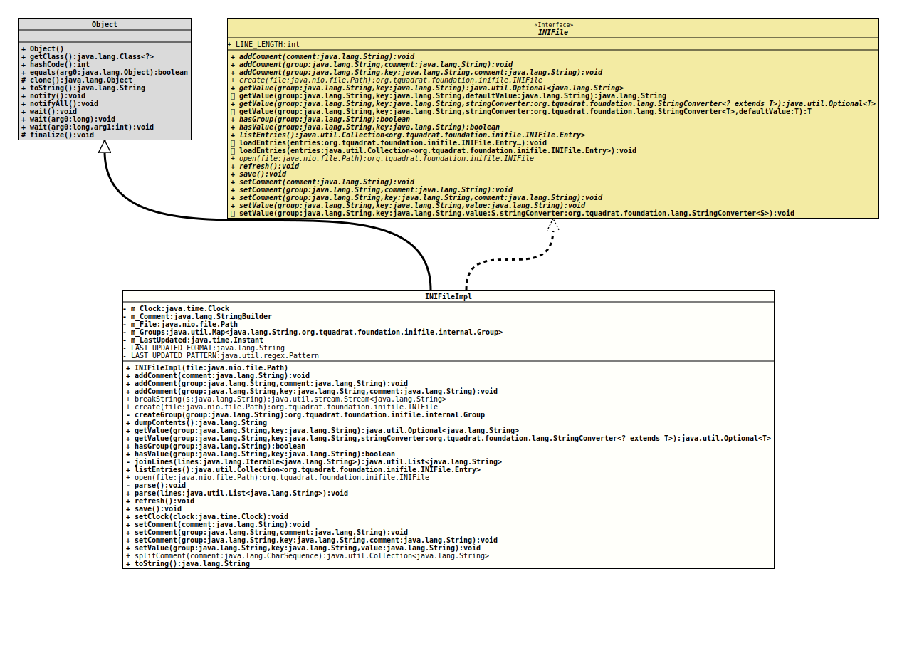

Class INIFileImpl
- All Implemented Interfaces:
INIFile
INIFile.- Author:
- Thomas Thrien (thomas.thrien@tquadrat.org)
- Version:
- $Id: INIFileImpl.java 1127 2024-04-04 20:21:25Z tquadrat $
- Since:
- 0.1.0
- UML Diagram
-

UML Diagram for "org.tquadrat.foundation.inifile.internal.INIFileImpl"
{kind=link}
-
Nested Class Summary
Nested classes/interfaces inherited from interface org.tquadrat.foundation.inifile.INIFile
INIFile.Entry -
Field Summary
FieldsModifier and TypeFieldDescriptionprivate static final StringThe format String that is used for the last updated comment.private static final PatternThe pattern that is used for the last updated comment.private ClockThe clock that is used to determine the last update.private final StringBuilderThe comment for this file.private final PathThe reference to file that is used to persist the contents.The groups.private InstantThe time when the file was last updated.Fields inherited from interface org.tquadrat.foundation.inifile.INIFile
LINE_LENGTH -
Constructor Summary
Constructors -
Method Summary
Modifier and TypeMethodDescriptionfinal voidaddComment(String comment) Adds the given comment to the INI file.final voidaddComment(String group, String comment) Adds the given comment to the given group.final voidaddComment(String group, String key, String comment) Adds the given comment to the value that is identified by the given group and key.Breaks the given String into chunks of 75 characters.static final INIFileCreates an empty INI file.private final GroupcreateGroup(String group) Creates a new instance ofGroupfor the given name.final StringDumps the contents to a String.Retrieves the value for the given key from the given group.final <T> Optional<T> getValue(String group, String key, StringConverter<? extends T> stringConverter) Retrieves the value for the given key from the given group.final booleanChecks whether the INI file contains a group with the given name.final booleanChecks whether the INI file contains an entry with the given key.Join all lines that end with a backslash with the next line on the list.final Collection<INIFile.Entry> Returns all entries of the INI file.static final INIFileOpens the given INI file and reads its contents.private final voidparse()Loads the content from the file into memory.final voidParses the given lines to the INI file contents.final voidrefresh()Re-reads the values.final voidsave()Saves the contents of the INI file to the file that was provided tocreate(Path)oropen(Path).final voidSets the clock that is used to determine the last update.final voidsetComment(String comment) Sets the given comment to the INI file.final voidsetComment(String group, String comment) Sets the given comment to the given group.final voidsetComment(String group, String key, String comment) Sets the given comment to the value that is identified by the given group and key.final voidStores the given value with the given key to the given group.static final Collection<String> splitComment(CharSequence comment) Splits a comment to the proper line length.final StringtoString()Methods inherited from class java.lang.Object
clone, equals, finalize, getClass, hashCode, notify, notifyAll, wait, wait, waitMethods inherited from interface org.tquadrat.foundation.inifile.INIFile
getValue, getValue, loadEntries, loadEntries, setValue
-
Field Details
-
m_Clock
The clock that is used to determine the last update. This is changed only for testing purposes, the default isClock.systemDefaultZone(). -
m_Comment
The comment for this file. -
m_File
The reference to file that is used to persist the contents. -
m_Groups
The groups. -
m_LastUpdated
The time when the file was last updated. -
LAST_UPDATED_FORMAT
The format String that is used for the last updated comment. -
LAST_UPDATED_PATTERN
The pattern that is used for the last updated comment.
-
-
Constructor Details
-
INIFileImpl
Creates a new instance of
INIFileImpl.The constructor does not check whether the file argument is
null; this has to be done by the factory methodscreate(Path)andopen(Path).But that this constructor is public allows simpler tests.
- Parameters:
file- The file that holds the contents.
-
-
Method Details
-
addComment
Adds the given comment to the INI file.
The new comment will be appended to an already existing one.
- Specified by:
addCommentin interfaceINIFile- Parameters:
comment- The comment.
-
addComment
Adds the given comment to the given group.
The new comment will be appended to an already existing one.
- Specified by:
addCommentin interfaceINIFile- Parameters:
group- The group.comment- The comment.
-
addComment
Adds the given comment to the value that is identified by the given group and key.
The new comment will be appended to an already existing one.
- Specified by:
addCommentin interfaceINIFile- Parameters:
group- The group.key- The key for the value.comment- The comment.
-
breakString
Breaks the given String into chunks of 75 characters. All but the last chunk will end with a backslash ("\").
- Parameters:
s- The String to split.- Returns:
- The stream with the chunks.
-
create
Creates an empty INI file. If the file already exists, it will be overwritten without notice.
The given file is used to store the value on a call to
save().- Parameters:
file- The file.- Returns:
- The new instance.
-
createGroup
Creates a new instance ofGroupfor the given name.- Parameters:
group- The name of the group.- Returns:
- The new instance.
-
dumpContents
Dumps the contents to a String.- Returns:
- The contents in a String.
-
getValue
Retrieves the value for the given key from the given group. -
getValue
public final <T> Optional<T> getValue(String group, String key, StringConverter<? extends T> stringConverter) Retrieves the value for the given key from the given group.- Specified by:
getValuein interfaceINIFile- Type Parameters:
T- The target type.- Parameters:
group- The group.key- The key for the value.stringConverter- The implementation ofStringConverterthat is used to convert the stored value into the target type.- Returns:
- An instance of
Optionalthat holds the retrieved value.
-
hasGroup
Checks whether the INI file contains a group with the given name.
This method will not throw an exception for an invalid group name; instead it returns
false. -
hasValue
Checks whether the INI file contains an entry with the given key.
This method will not throw an exception for an invalid group name or an invalid key; instead it returns
false. -
joinLines
Join all lines that end with a backslash with the next line on the list.- Parameters:
lines- The input lines.- Returns:
- The output.
-
listEntries
Returns all entries of the INI file.- Specified by:
listEntriesin interfaceINIFile- Returns:
- The entries.
-
open
Opens the given INI file and reads its contents. If the file does not exist yet, a new, empty file will be created.- Parameters:
file- The file.- Returns:
- The new instance.
- Throws:
IOException- A problem occurred when reading the file.
-
parse
Loads the content from the file into memory.- Throws:
IOException- A problem occurred when reading the file.
-
parse
Parses the given lines to the INI file contents.- Parameters:
lines- The joined lines; the list does not contain any multi-line constructs.- Throws:
IOException- The structure is invalid.
-
refresh
Re-reads the values.- Specified by:
refreshin interfaceINIFile- Throws:
IOException- A problem occurred when reading the file.
-
save
Saves the contents of the INI file to the file that was provided tocreate(Path)oropen(Path).- Specified by:
savein interfaceINIFile- Throws:
IOException- A problem occurred when writing the contents to the file.
-
setClock
Sets the clock that is used to determine the last update.
This is used only for testing purposes.
- Parameters:
clock- The clock.
-
setComment
Sets the given comment to the INI file.
The new comment will replace any already existing comment.
- Specified by:
setCommentin interfaceINIFile- Parameters:
comment- The comment.- Since:
- 0.4.3
-
setComment
Sets the given comment to the given group.
The new comment will replace any already existing comment.
- Specified by:
setCommentin interfaceINIFile- Parameters:
group- The group.comment- The comment.- Since:
- 0.4.3
-
setComment
@API(status=STABLE, since="0.4.3") public final void setComment(String group, String key, String comment) Sets the given comment to the value that is identified by the given group and key.
The new comment will replace any already existing comment.
- Specified by:
setCommentin interfaceINIFile- Parameters:
group- The group.key- The key for the value.comment- The comment.- Since:
- 0.4.3
-
setValue
Stores the given value with the given key to the given group. -
splitComment
Splits a comment to the proper line length.- Parameters:
comment- The comment to split.- Returns:
- The lines for the comment.
-
toString
-